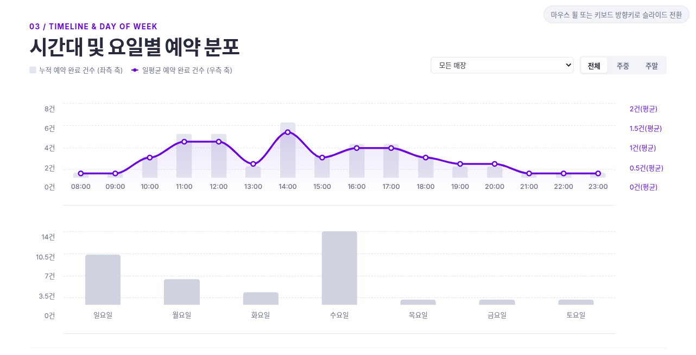

Overview
직접 볼 수 없는 수요를
직접 볼 수 없는 수요를
예약 데이터로 추정한다
상권을 조사하면서 업체마다 예약이 실제로 얼마나 이뤄지는지 알고 싶었지만, 예약 건수는 공개되지 않았습니다. 대신 공개 예약 페이지의 시간대별 예약 상태를 매일 모아 이용량을 간접적으로 추정했습니다.
Node.js · Puppeteer · JavaScript · SVG
01
매일 수집
스케줄러로 하루 한 번 업체별 예약 페이지의 시간대 상태를 기록
02
날짜별 적재
수집한 날짜를 파일 이름에 붙여 CSV로 쌓음
03
기간 병합
여러 날짜의 CSV를 한 번에 올려 기간 전체로 합침
04
패턴 확인
업체 순위, 시간대별, 요일별 예약 분포를 브라우저에서 바로 시각화
Problem
한 번 들여다봐서는
한 번 들여다봐서는
수요를 알 수 없다
상권에 들어갈지 판단하려면 이용량의 흐름이 필요했지만, 손으로 볼 수 있는 건 한 시점의 화면뿐이었습니다.
업체별 예약 건수는 공개되지 않는다
여러 업체의 예약 현황을 보려면 페이지를 하나씩 열어 엑셀에 옮겨야 한다
한 시점만 봐서는 요일별, 시간대별 흐름과 추세를 알 수 없다
Pipeline
모으고, 쌓고,
모으고, 쌓고,
합쳐서 본다
- 수집: 헤드리스 브라우저로 모바일 예약 페이지를 열고, 페이지가 불러오는 시간대별 예약 정보를 기록
- 적재: 업체, 예약 자원, 날짜, 시간, 상태를 날짜가 붙은 CSV로 저장. 엑셀에서 바로 열리도록 인코딩을 맞춤
- 자동화: 스케줄러로 매일 수집해 데이터가 계속 쌓이게 함
- 분석: 여러 날짜의 CSV를 끌어다 놓으면 기간 전체를 합쳐 순위, 시간대, 추세 차트를 그림
reservations_YYYYMMDD.csv
# 하루에 파일 하나, 슬롯마다 한 줄
StudioName, ResourceID, Date, Time, Status
# 날짜별 파일을 여러 개 올리면
# 브라우저에서 기간 전체로 병합해
# 업체 순위, 시간대별, 요일별 분포를 계산
Design Decision
없는 값은
없는 값은
대리 지표로 채운다
조사에 필요한 값을 직접 얻을 수 없을 때, 얻을 수 있는 값 중 가장 가까운 것을 골라 꾸준히 쌓는 쪽을 택했습니다.
지표
예약 건수 대신 예약 상태
예약 건수는 볼 수 없어서, 시간대마다 예약이 찼는지를 기록해 이용량을 추정했습니다.
수집 주기
한 번이 아니라 매일
같은 방식으로 매일 쌓아야 요일별, 시간대별 패턴과 기간 추세를 볼 수 있습니다.
규모
조사용 도구는 가볍게
서버, 외부 DB, API 키 없이 로컬 수집과 브라우저 시각화만으로 끝나게 만들어 운영 부담을 남기지 않았습니다.
Result
데이터를 보고
데이터를 보고
들어가지 않기로 했다
쌓인 데이터로 요일별, 시간대별 예약 분포를 확인했고, 예약 이용률이 낮다는 결과를 근거로 해당 사업 검토를 접었습니다.
요일·시간대별 예약 분포를 근거로 사업 검토 종료

분석 대시보드 · 시간대별, 요일별 예약 분포